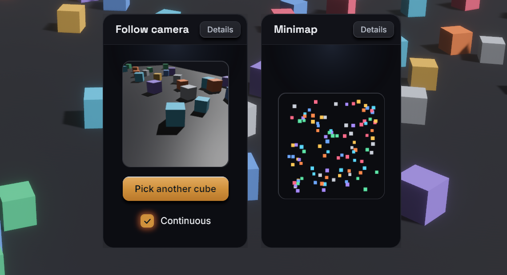

<portal>
<portal> shows a named render target inside the UI: usually the output of a
Bevy camera that renders into a texture, for a minimap, a picture-in-picture
view or a 3D item preview. It is a styled node like <node>, whose image is
the target's texture stretched over the node. Your app owns the cameras and
registers each target under a name in the RenderTargets resource. React
displays a target by that name.
Usage
TSX
<portal target="minimap" style={{ width: 160, height: 160 }} />Rust
use bevy::prelude::*;
use bevy_react::{PortalCamera, RenderTargetSpec, RenderTargets};
fn setup(
mut commands: Commands,
mut targets: ResMut<RenderTargets>,
mut images: ResMut<Assets<Image>>,
) {
let minimap = targets.create(
&mut images,
"minimap",
RenderTargetSpec::default(),
);
commands.spawn((
Camera3d::default(),
Transform::from_xyz(0.0, 30.0, 0.0)
.looking_at(Vec3::ZERO, Vec3::NEG_Z),
minimap.camera_target(),
PortalCamera("minimap".into()),
));
}<portal> comes from the portal cargo feature, which is on by default and
adds PortalPlugin to ReactPlugins. Without it, a <portal> mounts as a
plain node and reports a featureMissing warning (see
Cargo features). The RenderTargets
registry is part of the core and always available.
Render targets
RenderTargets::create(&mut images, name, spec) allocates a texture and
registers it under name. It returns a RenderTarget whose
camera_target() is the Bevy RenderTarget component that points a camera
at the texture. Creating an existing name again replaces it.
- Tag the camera with
PortalCamera(name)so bevy-react decides when it renders (see "Render modes"). An untagged camera renders every frame. - The name is the only link between the two sides. Use a constant both sides know, or send it to React with an event (see Bevy to React).
- A
<portal>whose target doesn't exist yet is transparent, and shows the texture as soon as the target is created. Changingtargetswitches textures. remove(name)drops a target: its portals turn transparent again. Despawn the camera yourself.register(name, handle)registers anImageyou already have (generated or loaded) under a name. It is static: nothing renders into it or resizes it.get(name)returns a target's texture handle.
Use RenderLayers on the camera and on what it should see to give a portal
its own scene, as a minimap camera drawing flat markers does.
Target options
RenderTargetSpec configures a target:
| Field | Default | Meaning |
|---|---|---|
size |
Resolution::Auto |
Auto follows the portal's size; Fixed(UVec2) is fixed |
mode |
RenderMode::Live |
When the camera renders (see below) |
format |
TextureFormat::Rgba8UnormSrgb |
Texture format |
Resolution::Autosizes the texture to the portal's laid-out size in physical pixels, rounded up to a multiple of 16, so the output is crisp and the camera has the portal's aspect ratio. It assumes one portal per target: with several, the last one bound decides the size.Resolution::Fixed(size)keeps one size whatever the layout, for a target shown in several places. The texture stretches to each portal's box.- Both are capped at 2048 pixels per side.
- Use an HDR format such as
Rgba16Floatwhen the camera needs HDR, for example for bloom.
Render modes
RenderMode::Live: the camera renders every frame while at least one portal showing the target is visible. A portal that is unmounted,display: "none"or scrolled entirely out of its clipping ancestor doesn't count, so a target nobody sees costs nothing. A portal that becomes visible shows a fresh frame at once.RenderMode::Snapshot: the camera renders once when the target is created, when you callinvalidate(name), when anAutotarget resizes, and when its mode changes, then stops. The texture keeps the last frame: cheap for static thumbnails. A snapshot renders even while no portal shows it, so it is ready when one does.
set_mode(name, mode) switches at runtime. Going from Live to Snapshot
renders one last frame, then freezes. For example, a React button can
pause a preview through a message:
TSX
import { useState } from "react";
import { bevy } from "./bevy";
function PreviewToggle() {
const [live, setLive] = useState(true);
const toggle = () => {
setLive(!live);
bevy.preview.setLive(!live);
};
return (
<button onClick={toggle}>
<text>{live ? "Pause preview" : "Resume preview"}</text>
</button>
);
}Rust
use bevy::prelude::*;
use bevy_react::prelude::*;
use bevy_react::{RenderMode, RenderTargets};
#[react_message(name = "preview.setLive")]
struct SetPreviewLive(bool);
fn on_set_preview_live(
ev: On<SetPreviewLive>,
mut targets: ResMut<RenderTargets>,
) {
let mode = if ev.event().0 {
RenderMode::Live
} else {
RenderMode::Snapshot
};
targets.set_mode("preview", mode);
}
// app.add_react_handler(on_set_preview_live);Styles and events
<portal>takes everything<node>does:style,hoverStyle,pressStyle,focusStyle, pointer handlers,onWheeland the scroll props.- It has no intrinsic size: give it a width and a height.
- Pointer events hit the portal's box like any node; they don't reach the scene the camera sees.
backgroundColorshows through transparent pixels of the texture, such as a camera clear color with alpha.backgroundImageis ignored with astyleIgnoredwarning.imageRenderingmodes other than"auto"are not available on a portal and report animageRenderingwarning.- A live portal inside a composited layer (an
ancestor with a
filter,backdropFilter,transform3d,morphFilterorcache, oropacityon a node with children) freezes on the layer's cached frame: the layer can't see the camera's writes. Setcache: "never"on the node that creates the layer so it re-captures every frame.
A backgroundImage with a { texture } source shows a registered target as
a node's background instead. It suits static textures registered with
register: see Background images.
Limits
- Each live target is a full extra camera render per frame while it is visible.
- Only cameras tagged
PortalCameraare switched on and off. Autoresolution assumes one portal per target.- Textures are capped at 2048 pixels per side, so very large portals render at a lower resolution.

See <portal> in the element reference.